Oscillators
In this chapter
- 24.1 Oscillation principle
- 24.2 Barkhausen criterion
- 24.3 Phase and magnitude conditions
- 24.4 RC phase-shift oscillator
- 24.5 Wien-bridge oscillator
- 24.6 LC oscillators
- 24.7 Hartley oscillator
- 24.8 Colpitts oscillator
- 24.9 Crystal oscillator
- 24.10 Frequency calculations
- 24.11 Amplitude stabilisation
- 24.12 GATE problems
24.1 Oscillation principle
An oscillator generates a periodic waveform with no input signal. It is an amplifier with positive feedback: noise or the switch-on transient is amplified, fed back in phase and reinforced, until nonlinearity limits the amplitude.
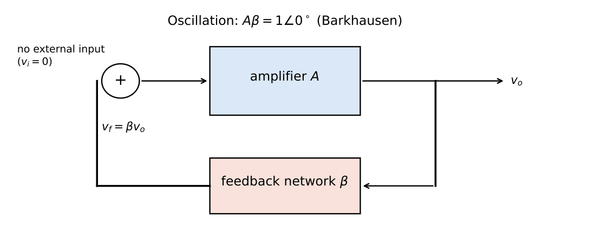
\(A_f=\dfrac{A}{1-A\beta}\): an output exists with zero input if \(A\beta=1\).
24.2 Barkhausen criterion
\(|A(j\omega_0)\beta(j\omega_0)|=1\) and \(\angle A\beta=0^\circ\) (or \(360^\circ n\)) at \(\omega_0\).
For start-up: \(|A\beta|>1\) initially.
24.3 Phase and magnitude conditions
The phase condition sets the frequency; the magnitude condition sets the required gain. The loop-gain plot below shows that the conditions hold at one frequency only.
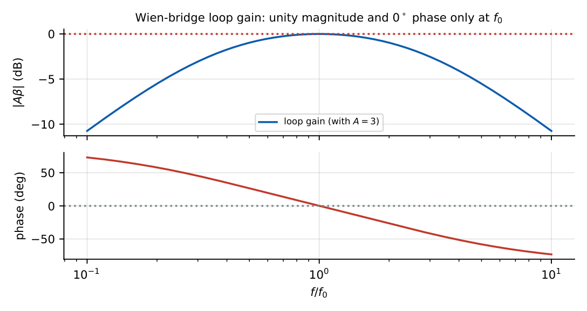
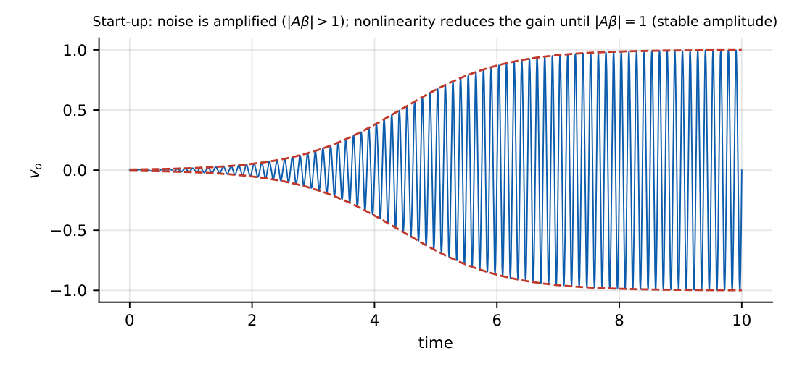
If \(|A\beta|<1\) the oscillation dies out; if \(|A\beta|>1\) permanently, the amplitude grows until the output saturates and the waveform is distorted (square-ish). The equilibrium \(|A\beta|=1\) is reached only through amplitude control.
24.4 RC phase-shift oscillator
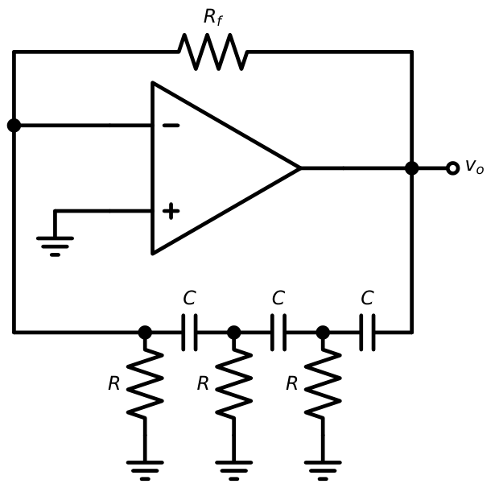
Each section adds up to \(90^\circ\); three sections provide \(180^\circ\) at one frequency (where each contributes \(60^\circ\)).
\(f_0=\dfrac{1}{2\pi RC\sqrt6}\), \(\beta(f_0)=-\dfrac1{29}\), \(|A|\ge29\) i.e. \(R_f\ge29R\).
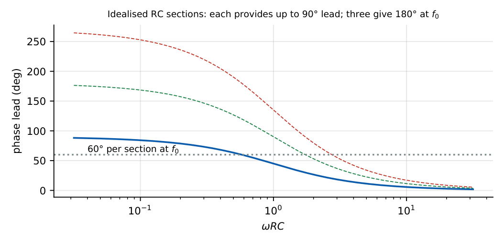
\(R=10\) k\(\Omega\), \(C=10\) nF: \(f_0=1/(2\pi\times10^4\times10^{-8}\times2.449)=650\) Hz. Required \(R_f=29R=290\) k\(\Omega\) (use a pot and adjust for a clean sine).
24.5 Wien-bridge oscillator
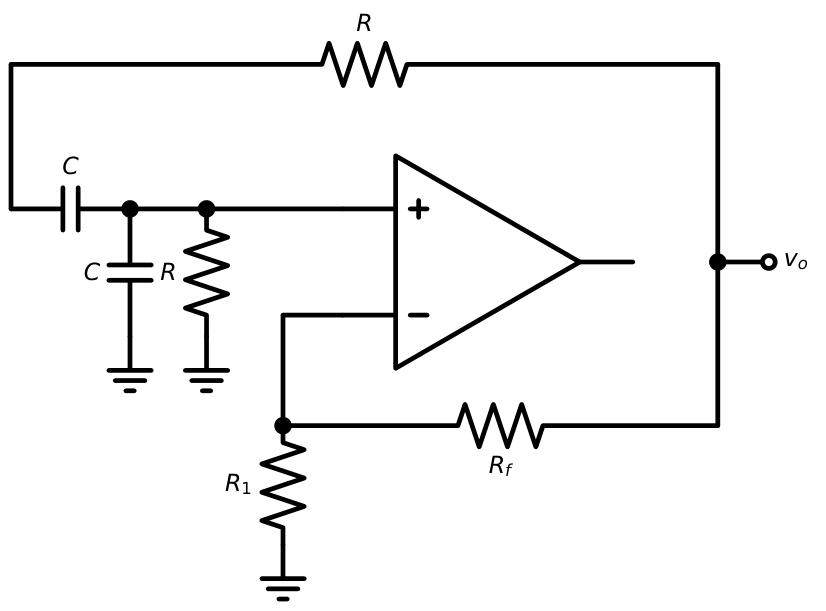
The Wien network has \(\beta=\dfrac{1}{3+j(\omega RC-1/\omega RC)}\), real and equal to \(1/3\) at \(\omega_0=1/RC\).
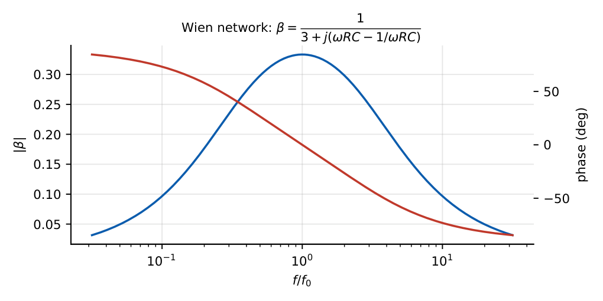
\(f_0=\dfrac{1}{2\pi RC}\), required gain \(A=1+\dfrac{R_f}{R_1}\ge3\), i.e. \(R_f\ge2R_1\).
\(R=10\) k, \(C=16\) nF: \(f_0=995\) Hz. Choose \(R_1=10\) k, \(R_f=20.5\) k (slightly \(>2R_1\) for start-up).
Amplitude stabilisation: a tungsten lamp (positive temperature coefficient) or diode limiter in \(R_f\) automatically lowers the gain as the amplitude grows.
24.6 LC oscillators
At high frequencies (\(>\) 100 kHz) \(RC\) networks become impractical; LC tanks give high \(Q\) and stability. General three-reactance oscillator: reactances \(X_1\) (base–emitter), \(X_2\) (collector–emitter) and \(X_3\) (collector–base) with \(X_1+X_2+X_3=0\) at resonance and \(X_1,X_2\) of the same type: capacitors give Colpitts; inductors give Hartley.
24.7 Hartley oscillator
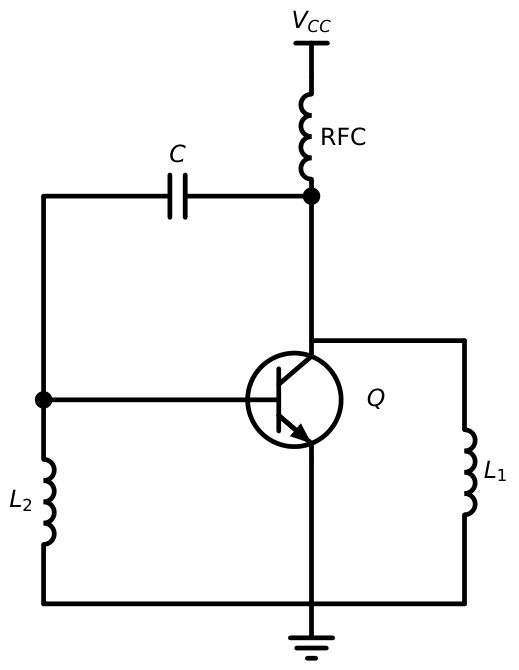
\(f_0=\dfrac{1}{2\pi\sqrt{(L_1+L_2+2M)\,C}}\) \(|A|\ge\dfrac{L_1}{L_2}\) (approximately; \(L_1\) at the collector, \(L_2\) at the base)
\(L_1=L_2=50\ \mu\)H, \(M=0\), \(C=100\) pF: \(L_{eq}=100\ \mu\)H, \(f_0=1/(2\pi\sqrt{10^{-4}\times10^{-10}})=1.59\) MHz. Required gain \(\ge1\) (in practice several).
24.8 Colpitts oscillator
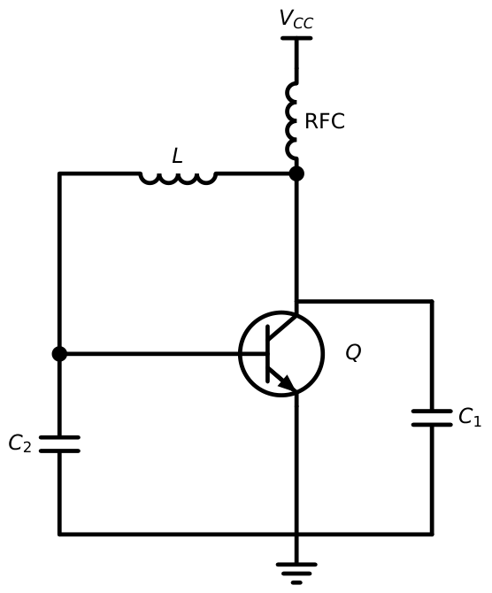
\(f_0=\dfrac{1}{2\pi\sqrt{L\,C_{eq}}}\), \(C_{eq}=\dfrac{C_1C_2}{C_1+C_2}\) \(|A|\ge\dfrac{C_2}{C_1}\) (\(C_1\) at the collector, \(C_2\) at the base)
\(L=10\ \mu\)H, \(C_1=C_2=100\) pF: \(C_{eq}=50\) pF, \(f_0=1/(2\pi\sqrt{10^{-5}\times5\times10^{-11}})=7.12\) MHz. For \(C_1=200\) pF, \(C_2=100\) pF: \(C_{eq}=66.7\) pF, \(f_0=6.16\) MHz, \(A\ge0.5\).
24.9 Crystal oscillator
A quartz crystal is a piezoelectric resonator with an extremely high \(Q\) (\(10^4\)–\(10^6\)) and excellent temperature stability.
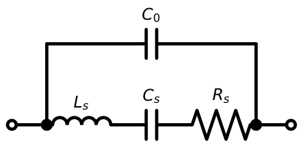
Series resonance: \(f_s=\dfrac{1}{2\pi\sqrt{L_sC_s}}\) Parallel resonance: \(f_p=f_s\sqrt{1+\dfrac{C_s}{C_0}}\) (\(f_p>f_s\), very close)
\(Q=\dfrac{\omega_sL_s}{R_s}\)
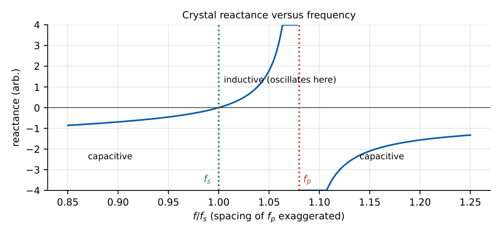
\(L_s=2\) H, \(C_s=0.01267\) pF, \(C_0=3\) pF, \(R_s=100\ \Omega\). \(f_s=1.000\) MHz, \(f_p=1.000\times\sqrt{1+0.004223}=1.00211\) MHz (a \(0.2\%\) window), \(Q=2\pi\times10^6\times2/100=1.26\times10^5\).
24.10 Frequency calculations
| Oscillator | \(f_0\) | Gain requirement |
|---|---|---|
| RC phase-shift (3 sections) | \(\dfrac{1}{2\pi RC\sqrt6}\) | \(|A|\ge29\) |
| Wien bridge | \(\dfrac{1}{2\pi RC}\) | \(A\ge3\) |
| Hartley | \(\dfrac1{2\pi\sqrt{(L_1+L_2+2M)C}}\) | \(A\ge L_1/L_2\) |
| Colpitts | \(\dfrac1{2\pi\sqrt{L\,C_1C_2/(C_1+C_2)}}\) | \(A\ge C_2/C_1\) |
| Crystal | \(f_s\) (series) or between \(f_s\) and \(f_p\) | \(|A|\ge1\) (\(R_s\) loss) |
24.11 Amplitude stabilisation
Without control, \(|A\beta|\) is slightly larger than 1 at start-up and the amplitude grows until the amplifier saturates. Techniques: (1) diodes or Zeners in the feedback path that increase attenuation at large signal levels; (2) a lamp or thermistor in the gain-setting network; (3) a JFET as a voltage-controlled resistor with automatic gain control; (4) transistor nonlinearity (self-limiting biasing in LC oscillators).
24.12 GATE problems
Q1. A Wien-bridge oscillator has \(R=1.59\) k\(\Omega\), \(C=0.1\ \mu\)F. Its frequency is Hz.
Q2. The minimum gain of a three-section RC phase-shift oscillator (op-amp inverting) is .
Q3. A Colpitts oscillator has \(L=1\) mH, \(C_1=C_2=200\) pF. \(f_0=\) kHz.
Q4. The Barkhausen criterion requires (A) \(|A\beta|=1\), \(\angle A\beta=0^\circ\) (B) \(|A\beta|=0\) (C) \(|A\beta|=1\), \(\angle=180^\circ\) (D) \(A=1\).
Q5. For a crystal, the relationship between the series and parallel resonance frequencies is (A) \(f_s>f_p\) (B) \(f_s<f_p\) (C) \(f_s=f_p\) (D) unrelated.
Q6. A Hartley oscillator with \(L_1=L_2=1\) mH (\(M=0\)), \(C=100\) pF: \(f_0=\) kHz.
Answers: Q1: \(1/(2\pi\times1590\times10^{-7})=1000\) Hz. Q2: 29. Q3: \(C_{eq}=100\) pF; \(f_0=1/(2\pi\sqrt{10^{-3}\times10^{-10}})=503\) kHz. Q4: (A). Q5: (B). Q6: \(L_{eq}=2\) mH; \(f_0=1/(2\pi\sqrt{2\times10^{-3}\times10^{-10}})=356\) kHz.
- Design a Wien oscillator for \(5\) kHz using \(C=10\) nF. [\(R=3.18\) k\(\Omega\)]
- Find \(f_0\) of an RC phase-shift oscillator with \(R=1\) k, \(C=0.1\ \mu\)F. [650 Hz]
- State why \(R_f\) slightly above \(2R_1\) is used in the Wien oscillator. [Ensure start-up (\(|A\beta|>1\))]
- Why is a crystal oscillator more stable than an LC oscillator? [Very high \(Q\) (\(>10^4\)) and low temperature coefficient]